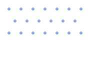
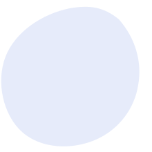
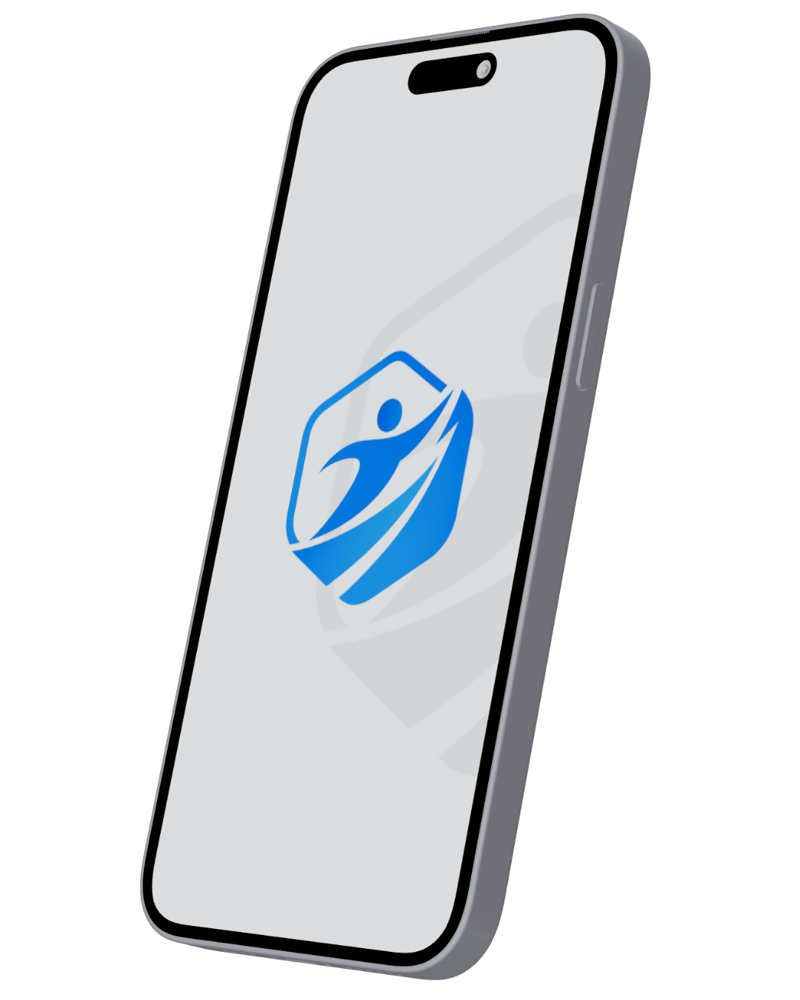

Isi Profil Potensi
Input minat, skill, dan tipe kepribadian agar sistem memahami kekuatanmu.


Platform Karier Digital Modern
Dari minat, skill, hingga kepribadian, sistem akan merekomendasikan jalur terbaik dan roadmap belajar yang jelas.
Lebih dari 8.500+ pelajar dan mahasiswa sudah eksplor karier di WorkSim

Input minat, skill, dan tipe kepribadian agar sistem memahami kekuatanmu.
Sistem menyarankan peran paling cocok lengkap dengan alasan yang relevan.
Pelajari skill step-by-step, centang progres, dan lihat levelmu bertambah.
Kerjakan mini project dan bangun portofolio agar siap freelance atau magang.
Career Discovery
Bingung harus mulai dari mana? AI kami akan menganalisis minat, kekuatan, dan kepribadianmu untuk menyusun rekomendasi jalur karier digital yang paling ideal.
Progress keseluruhan: 40%
HTML & CSS Basic
JavaScript Fundamental
React Framework
API Integration
Structured Learning
Tidak perlu bingung mencari materi kesana-kemari. Kami sediakan roadmap terstruktur langkah demi langkah dari dasar hingga mahir, lengkap dengan teori dan kuis interaktif.
Real-World Practice
Rasakan gambaran dunia kerja nyata. Terima tugas layaknya pekerja kantoran dari klien fiktif, bangun portofolio, dan evaluasi karyamu sendiri.
PT. Inovasi Cepat
"Tolong redesign landing page kami agar lebih modern dan memiliki tingkat konversi tinggi. Batas waktu pengerjaan 3 hari."
Frontend Developer
Digital Identity
Setiap tugas dan kuis yang kamu selesaikan akan terekam dalam profil digital ini. Buktikan keahlianmu tidak hanya lewat sertifikat, tapi lewat jejak nyata proses belajarmu.
Tips belajar, trend industri, dan challenge mingguan langsung ke inbox kamu.